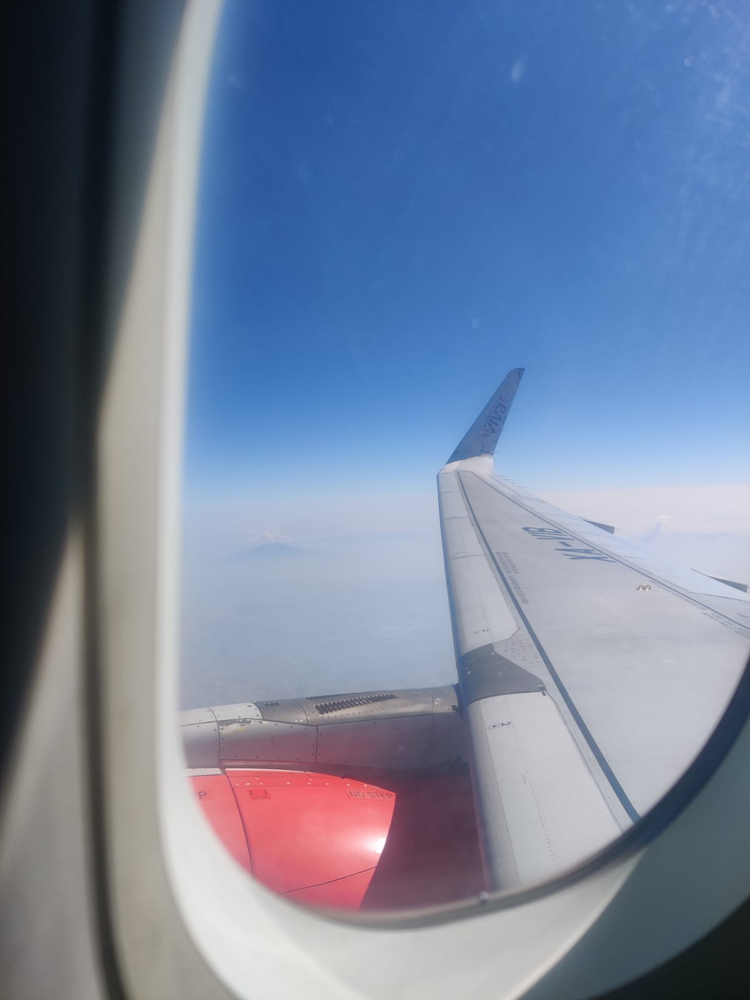
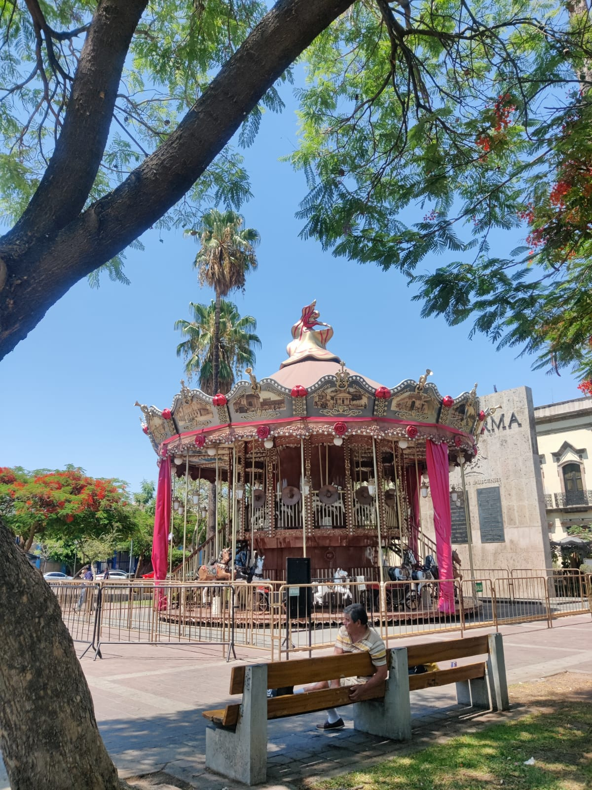
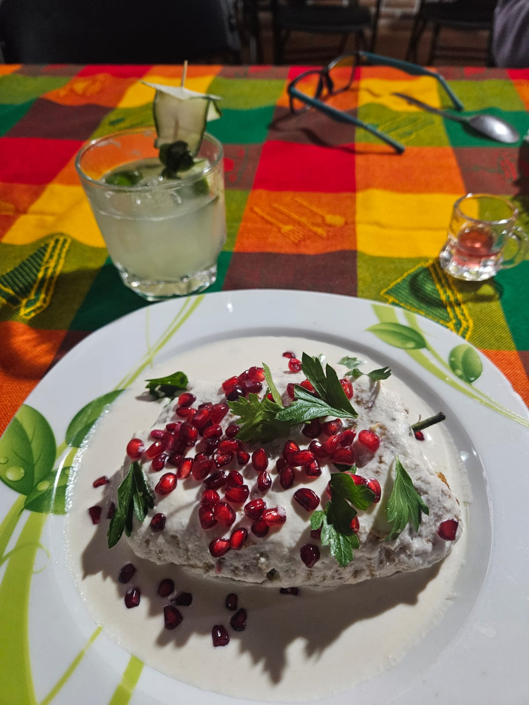
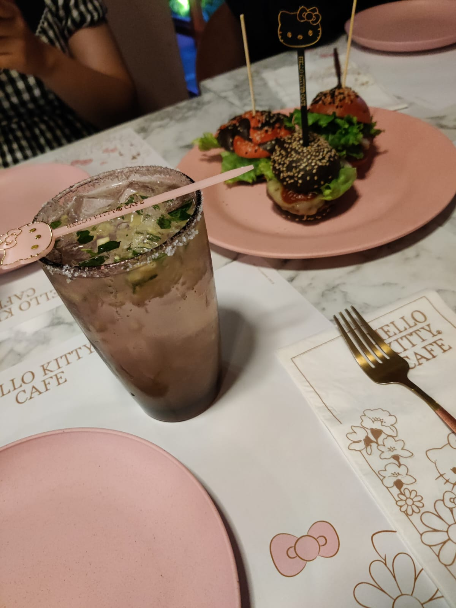
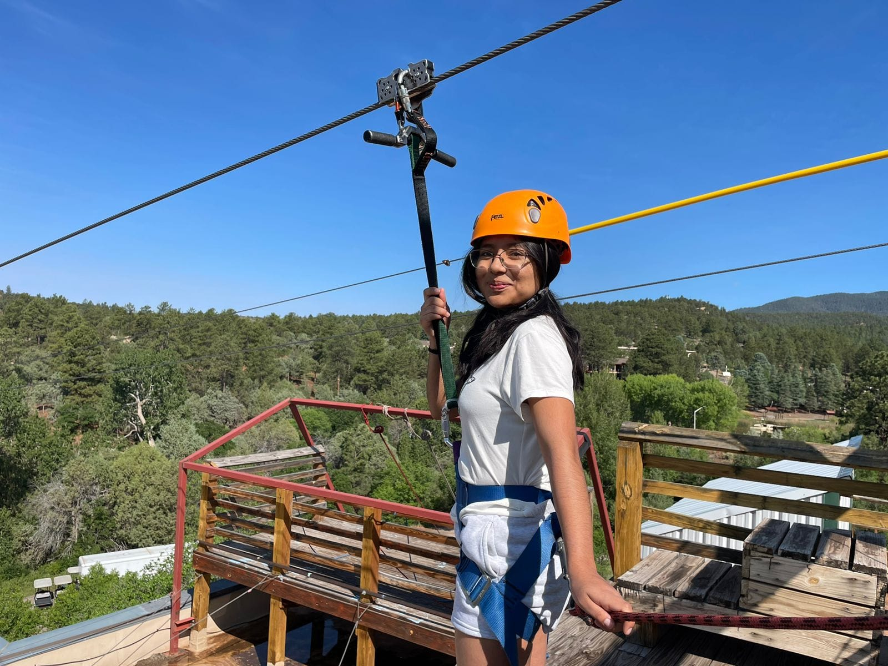

Aquí te mostrare algunas fotos que he tomado y la historia detrás de cada una
Mi primer viaje en avión
Esta es una foto muy linda, fue la primera vez que viajé en avión y que chévere todo, fui a Guadalajara, junto a otros dos amigos, algo muy extraño pero bonis.
Carrusel de Guadalajara
Esta foto es antes de que nos subiéramos al carrusel de Guadalajara con unas buenas rolitas de fondo.
Que delicia!
Epale, me gustan muchos los Chiles en Nogada, es de lo mas delicioso, ese día, no era un buen día, per la comidaaaaaa, me regreso mis buenos ánimos y quise tomarle una foto.
Compartir
Un día vi la publicación de un lugar con temática de Hello Kitty, era un café. Me gusta mucho la figura de hello Kitty porque me trae buenos recuerdos de cuando era pequeña, de esa figura era la vela que siempre me ponían en el pastel que partíamos en mi cumpleaños. Bueno, regresando, vi la publi y se la enseñé a mi amigo y fue así como se juntaron los amiguitos para ir a CDMX a tomar un café en el Hello Kitty Café y también a ver una peli en la Cineteca, un día muy lindo la verdad.
Ese mismo día vimos la película de Pinocho, y su exposición, casi todos lloramos en la peli, bueno, a mi me costó un poco. Mi amigo conocía una chica que vivía allá, la conocimos y nos acompañó a varios lados, incluyendo el café.

Esta foto también me gusta, porque sí, porque soy yo intentando cosas nuevas, con personas nuevas, en un lugar completamente nuevo para mí. Me avente como tres veces ese día. Solo una vez me estampe bien feo al llegar al final y ya me iba de regreso.
Sígueme
No me especializo en foto, pero si me gusta tomar fotos y muchas mas cosas que puedes ver en mis redes sociales.